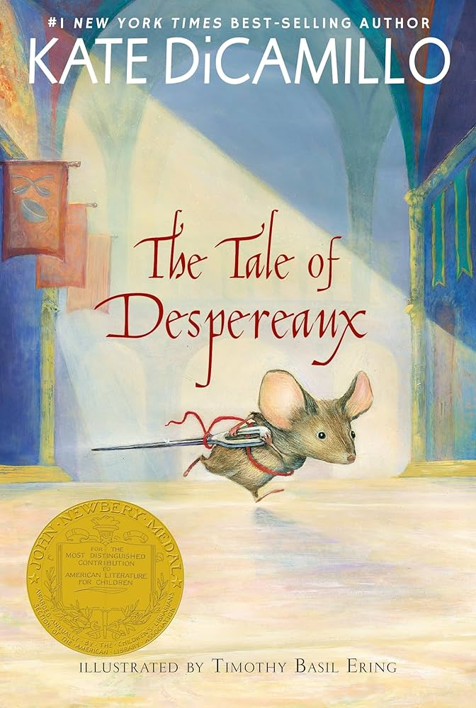
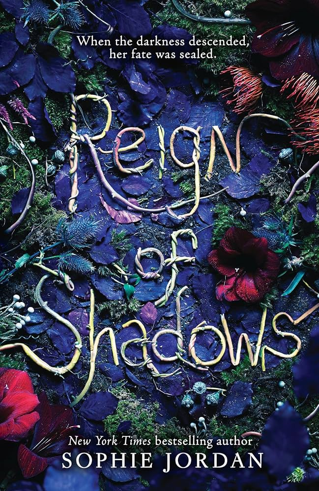
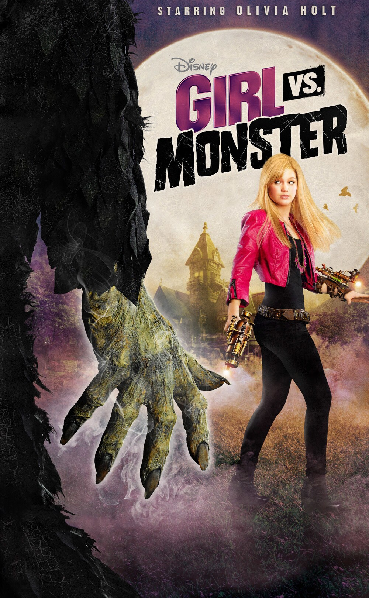
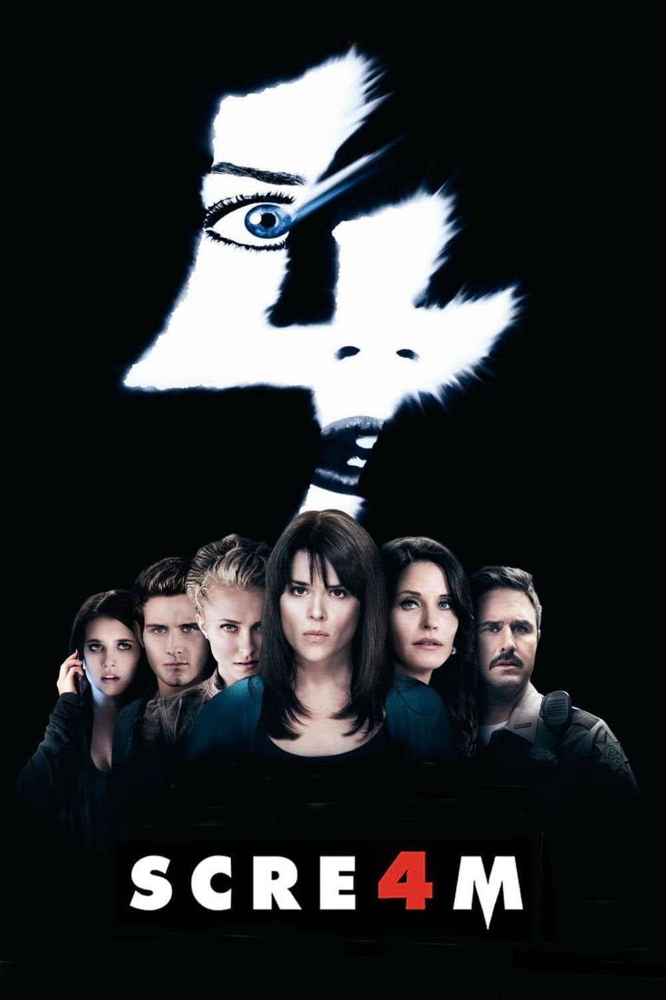
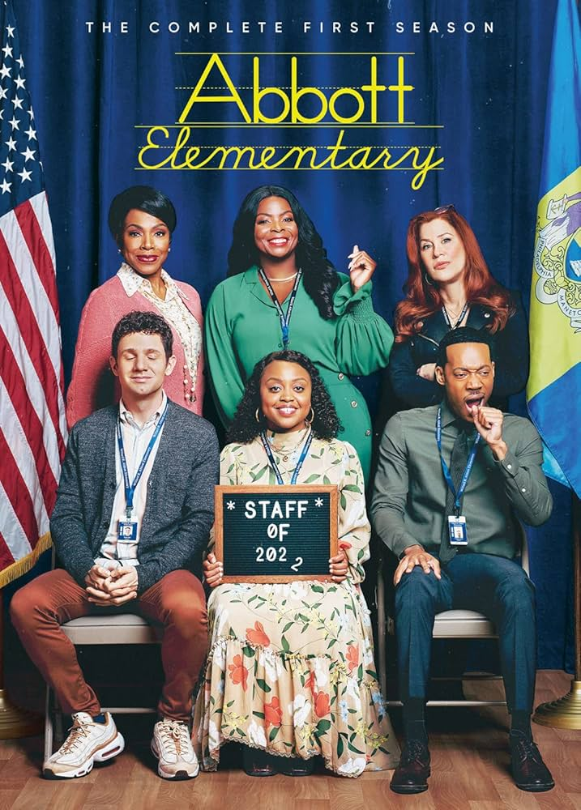
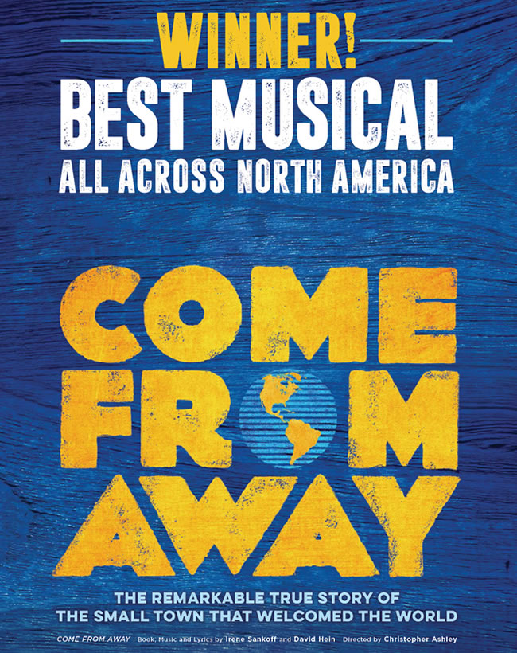

Books
The Tale of Despereaux
by Kate DiCamillo

One of my favorite kids' books, Tale of Despereaux replicates the fairy-tale style with brand new characters and stories. Read it to your kids or just by yourself and be sent back to a simpler time when your biggest worry was no larger than a mouse.
Reign of Shadows
by Sophie Jordan

This book has fairy tale energy, starting with a very loose rapunzel retelling before diving headfirst into its own world. The romance is delightful and the monsters are so wonderfully ridiculous that you have to love them. A short, cute romp with an even more bonkers sequel, this moody story is perfect for fall.
Fangirl
by Rainbow Rowell

This is a classic YA romance, but it has stood the test of time. Return, or jump ahead, to your college years with a soft, feel-good story. Finding yourself and growing is hard, so join Cath as she fights to figure it out. You won't feel so alone.
Movies
Girl vs. Monster
This 2010s Disney Channel Original is a bit of a sleeper pick, but I've watched it every fall since I discovered it. It's so endearing and the perfect level of spooky with beautifully terrible CGI. I know that there are tons of better Halloween Disney movies out there, but this one have a very special place in my heart.
Twilight

While I like the books way more than the movies, the original Twilight movie has such immaculate fall vibes that I can't imagine not including it on this list. From the weird blue filter over the entire movie to the stormy baseball scene, this movie has become synonmous with fall. It's the perfect mood setter whether you watch it ironically or completely sincerely.
Scream 4
I'm going to cheat with this one a little bit and recommend the entire Scream franchise, but I think Scream 4 in particular is criminally underrated. It won't pack the same punch if you haven't seen the others, but, like all the others (except Scream 3, that one's not very good) it is so clever and fun to watch and theorize through. I love this movie. I love it so much. Please watch it.
TV Shows
The Vampire Diaries

I love vampires (as you can probably tell) and I also love cringe-inducing young adult media (also probably obvious). The Vampire Diaries combines these two loves and creates the perfect little spooky, mostly vibey show. Seasons 1 and 2 are the most fall-coded, but they all make me want to curl up under a blanket with some apple cider.
Abbott Elementary
This workplace sit-com has made the list through its sheer and undeniable delightfulness. Follow a crazy cast of wacky teachers and school staff as they try to make the best of a broken system for their students, deal with the craziness of elementary schoolers, and maybe find love along the way. It'll take you back to grade school in the best possible way.
Musicals
Come From Away
This musical's a bit heavy but is full of gorgeous music and reminds you of the beauty of humanity. The sets and blocking are so simple and fun, bringing the story to life. The lesser known story of 9/11, a tiny town in Canada accepts thousands of plane passengers when American airspace closes.